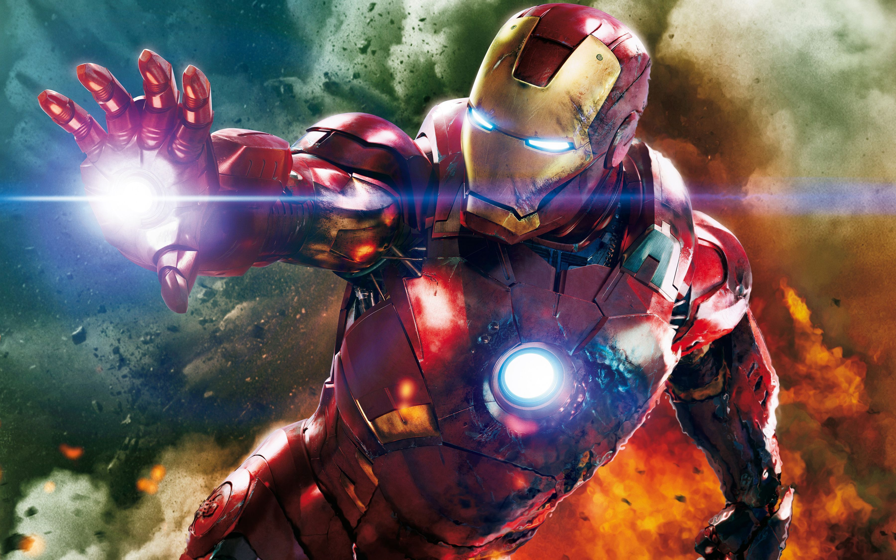

Iron Man
Birth and Early Life
The biological parents of Tony Stark were two S.H.I.E.L.D. agents, Amanda Armstrong and Jude, who met during a courier mission. After Jude saved Amanda from an assassin, they got to know each other and fell in love. Following a two-year relationship, Amanda became pregnant. A week before giving birth to the baby, Jude revealed to have been a Hydra double-agent with little regard for anybody but Amanda and himself who sold out fellow S.H.I.E.L.D. soldiers, and was even responsible for the incident that had almost cost Amanda her life. During a discussion when he was trying to convince Amanda to accept Hydra's protection, she attacked Jude and killed him.
Traumatized by this development, Amanda asked S.H.I.E.L.D. to ensure her future baby would find a safe and happy home. However, director Nick Fury followed the same procedure used for unwanted pregnancies in the agency, and the baby was left in an orphanage in Sofia, Bulgaria after Amanda birthed him in a local hospital. Fury's associate and famous industrialist Howard Stark learned of this, and decided to find the baby and adopt him, keeping the name Amanda wished he retained: Anthony.
In addition to Howard and his wife Maria suffering the latter's inability to give birth again, they needed to find a healthy boy to act as a decoy in place of their secret first born, Arno Stark. Arno's gestation had been extremely difficult, and his birth was only made possible with the help of an alien robot, the Rigellian Recorder 451, who had agreed to help the baby survive in exchange of the opportunity to bio-engineer him, so he could accelerate humanity's technological growth in the future.
However, as 451 genetically modified the baby in womb, Howard had discovered the robot hid some sort of kill switch, that would compromise the life of his son in the future, for which Stark developed a "biococktail" to interfere with it behind 451's back.[27] Once Arno was born, 451 left the Earth.[28] In a turn of events, Howard's interference with 451's machinations had caused the newborn to become fatally ill. The Starks had decided to keep the baby hidden in the Maria Stark Foundation Hospice.[27] In addition to filling the void left by Arno's fatal illness, Tony's adoption would prevent 451 from learning of Howard's meddling if it ever returned to Earth.
